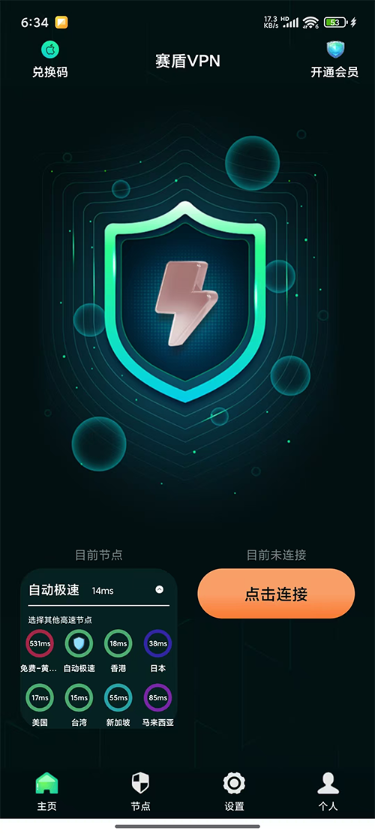

返回
欢迎查看常见问题
智慧服务，让您使用更简单

如何通过赛盾 VPN 访问Netflix
通过 赛盾VPN 连接后无法访问 Netflix(网飞、奈飞)，您可以按照这篇文章操作解决问题
赛盾 VPN成功安装后点击链接提示:错误9或赛盾被第三方应用程序禁用(如图下)是因为受到清理软件的限制，若您遇到以下情况，您可以通过以下对应的方法解决问题。
一、观看 Netflix 提示本影片上无法在您的地区观赏(Oh no! This titlecurrently isn't available to watch inyour country
1.开启赛盾 VPN!
2.点击菜单栏找到变更国家和地区
3.在变更国家和地区最上方切换到安全模式
4.选择“美国”或“台湾”线路
5.断开重新连接赛盾 VPN 即可

PS.若您还不是会员则无法启用安全模式(全局代理)的功能。您可以购买任一套餐，这样所剩余的青铜会员也会一同帮您升级哒。想了解更多关于会员的差异，您可以参考《 月度会员年度会员区别 》。
二、在电脑打开 Netflix 提示 notavailable
若遇到以下现象，请您根据以下方法分别在Windows、Mac 两种系统中，关闭 iPV6 后即可在浏览器上观看 Netflix 影剧啦。
①、Windows 系统设置
Windows 7、8
1.按下 windows 键 +i键 打开控制面板
2.依次进入“网络和lnternet
3.点击“高级网络设置”找到”更改适配器选项“
4.右击“本地连接”
5.再选择对话框选择属性:
6.在弹出的属性对话框中取消勾选“iPV6’
Windows 10:
1.在桌面右下角右键点击网络图标
2.找到网络和Internet 设置;
3.点击网络和共享中心
4.点击您连接的网络;
5.点击属性;
6.把“iPV6”的勾选去掉即可
Windows 11:
1.点击右下角网络图标
2.找到网络和 internet
3.点击高级网络设置更改网络适配器
4.右键点击连接网络的网卡;
5.点击属性
6.取消“iPV6”勾选
②、Mac 系统设置
1.打开电脑设置;
2.选择网络
3.选中您连接那个网路
4.找到 高级，选择 TCP/IP
5.将 iPV6 手动选择关闭
注:若您在下载和使用过程中有任何问题，您随时可以发送邮件给 {{kfEmail}}，将由专业的客户服务人员帮助您获取到最新版本的软件。